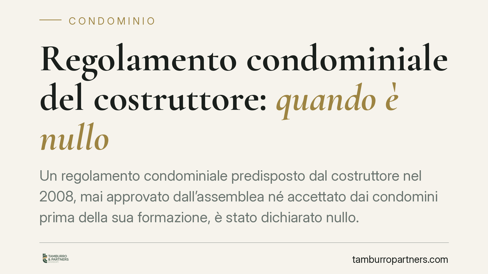

Regolamento condominiale del costruttore: quando è nullo
Un regolamento condominiale predisposto dal costruttore nel 2008, mai approvato dall'assemblea né accettato dai condomini prima della sua formazione, è stato dichiarato nullo. La pronuncia ribadisce un principio: l'impegno generico ad accettare un regolamento futuro non equivale alla sua approvazione. Comprendere la differenza tra regolamento assembleare e contrattuale è decisivo per capire quali clausole vincolano davvero.

Il caso
Secondo una recente pronuncia del Tribunale di Roma, un regolamento condominiale redatto dalla società costruttrice nel 2008 è stato ritenuto privo di efficacia perché mai validamente formato. L'assemblea non lo aveva approvato e i condomini acquirenti non lo avevano accettato nel momento in cui il testo si perfezionava: avevano solo assunto, negli atti di acquisto, un impegno generico ad accettare un regolamento che sarebbe stato predisposto in seguito.
*(Avvertenza: il numero e l'anno esatti della sentenza richiamata dalla fonte vanno verificati sul provvedimento originale prima di qualsiasi uso processuale. Riportiamo il principio, non la citazione come confermata.)*
Inquadramento normativo
Occorre distinguere due figure spesso confuse.
Il regolamento assembleare è quello previsto dall'art. 1138 c.c.: è obbligatorio quando i condomini sono più di dieci e disciplina l'uso delle cose comuni, i servizi, le spese. Si approva a maggioranza e non può incidere sui diritti di proprietà esclusiva di ciascun condomino.
Il regolamento contrattuale è invece quello che pone limiti alle proprietà individuali (ad esempio divieti di destinazione d'uso) o deroga ai criteri legali di ripartizione delle spese. Proprio perché incide su diritti soggettivi, richiede il consenso di tutti i condomini. Qui entrano in gioco gli artt. 1326 e seguenti c.c. sul meccanismo di formazione del consenso e l'art. 1372 c.c. sull'efficacia vincolante del contratto tra le parti.
Il punto tecnico centrale è questo: un impegno ad accettare un testo non ancora esistente manca di oggetto determinato o determinabile. Non ci si può obbligare validamente rispetto a un contenuto ignoto. Il consenso, per produrre effetti, deve formarsi su un testo conosciuto e identificato.
La giurisprudenza di legittimità è costante nel riconoscere che il regolamento di origine contrattuale vincola l'acquirente quando il testo definitivo è richiamato *per relationem* nell'atto di acquisto e da questi accettato, oppure quando è reso opponibile mediante trascrizione nei registri immobiliari (artt. 2659-2665 c.c.). Il semplice rinvio a un regolamento futuro e indeterminato non produce il medesimo effetto.
Implicazioni pratiche
Per il singolo condòmino la differenza è sostanziale. Le clausole che limitano l'uso della proprietà esclusiva o alterano i criteri legali di riparto delle spese vincolano solo se c'è stata una valida accettazione contrattuale.
Va però fatta una precisazione di equilibrio. L'accettazione individuale, contenuta nel rogito, del testo definitivo e conosciuto del regolamento può rendere quest'ultimo pienamente opponibile, anche in assenza di delibera assembleare. È il caso diverso dal mero rinvio a un testo futuro. Chi acquista con un atto che richiama e allega un regolamento già esistente si trova in una posizione giuridica differente da chi ha sottoscritto una generica promessa di adesione.
Un'ulteriore avvertenza: la nullità per vizio di formazione colpisce il regolamento non validamente costituito nel suo complesso, ma non implica automaticamente che ogni singola clausola sia illecita. Alcune previsioni potrebbero comunque trovare fondamento in altre fonti, come la legge o successive delibere regolari.
Cosa fare in concreto
- Verifica la natura del regolamento: controlla se contiene clausole che limitano la proprietà esclusiva o derogano al riparto legale delle spese. In tal caso serve consenso contrattuale, non maggioranza.
- Esamina il tuo atto di acquisto: accerta se il regolamento è richiamato ed era già esistente e conosciuto al momento del rogito, oppure se vi è solo un impegno generico a futura accettazione.
- Controlla la trascrizione: verifica nei registri immobiliari se il regolamento o le sue clausole limitative risultano trascritti, elemento rilevante per l'opponibilità ai terzi acquirenti.
- Conserva delibere e verbali: raccogli la documentazione sulle assemblee che hanno eventualmente approvato o integrato il testo nel tempo.
- Valuta prima di agire: è opportuno far esaminare regolamento, atti di provenienza e delibere da un professionista, così da distinguere le clausole effettivamente vincolanti da quelle contestabili.
Ogni condominio ha una storia a sé.
Se gestisci un'amministrazione e vuoi un confronto su una specifica questione condominiale, scrivi allo studio. Ti rispondiamo entro un giorno lavorativo.